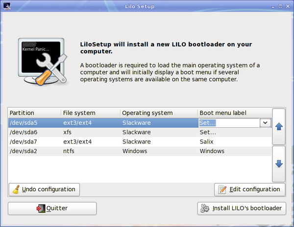

Lilosetup will install a new LILO bootloader on your computer.

A bootloader is required to load the main operating system of a computer and will initially display a boot menu if several operating systems are available on the same computer.
It is necessary to (re)configure the bootloader each time you upgrade the kernel or install a new operating system on your computer.
Lilosetup can also be useful in the process of a disaster recovery, in which case you may have to launch it from a Live CD if you have lost all other means to boot into your system.